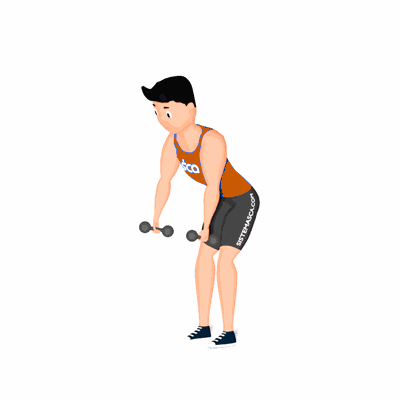

Hiperextensão de Ombro Inclinado

O exercício auxilia no fortalecimento e alongamento dos músculos do ombro.
Ficha Técnica
Tipo: Funcional
Grupo Muscular: Ombro
Aparelho: Nenhum
Músculos: Nenhum
Como realizar
- Segure um halter em cada mão com pegada neutra;
- Curvar o corpo à frente, antes do tronco estar perpendicular ao solo, a coluna em posição neutra, abdômen contraído e as pernas flexionadas;
- Realize uma hiperextensão do ombro, levando os braços para atrás do corpo;
- Retorne a posição inicial e repita os movimentos pela quantidade de repetições determinada pelo professor(a).
 RC STORE
RC STORE